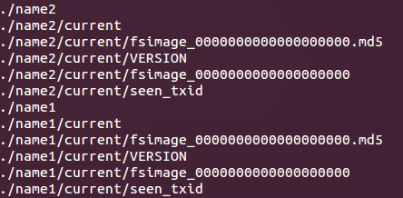

HDFS节点多目录存放
1. 名称节点多目录存放
【hdfs-default.xml】
<property>
<name>dfs.namenode.name.dir</name> <value>file://${hadoop.tmp.dir }/dfs/name</value>
<description>Determines where on the local filesystem the DFS name node
should store the name table(fsimage). If this is a comma-delimited list
of directories then the name table is replicated in all of the
directories, for redundancy. </description>
directories, for redundancy. </description>
</property>
决定了本地文件系统DFS NameNode存放name table（fsimage）的位置。如果此项是一个以逗号分隔的目录列表的话，那么name table将会在列表中的每一项中都存储一个副本。
如果配置多个目录去存储名称节点的本地数据，那么这些目录中存储的内容都是相同的。
dfs.namenode.name.dir = file://${hadoop.tmp.dir }/dfs/name1，file://${hadoop.tmp.dir }/dfs/name2
【hdfs-site.xml】
<property>
<name>dfs.namenode.name.dir</name>
<value>file://${hadoop.tmp.dir }/dfs/name1，file://${hadoop.tmp.dir }/dfs/name2</value>
</property>

name1和name2中存放的内容完全一致。
通过名称节点配置多个目录能够提高可靠性，比如一台主机的挂载了多块磁盘，可以将目录配置在不同磁盘上，如果一个磁盘挂掉，那么还有另外一个磁盘作为备份。
辅助名称节点是在主机的层面上对名称节点进行备份。
数据节点也可以配置多个目录，但作用与名称节点不同。数据节点所配置的不同目录是用来存放数据节点的本地数据的，也就是使用多个目录来存放它的本地数据，而这些目录中的内容都是不同的，并没有备份关系，数据节点的备份关系是通过多个数据节点主机存储备份来实现的。
2. 数据节点多目录存放
<property>
<name>dfs.datanode.data.dir</name>
<value>file://${hadoop.tmp.dir}/dfs/data</value>
<description>Determines where on the local filesystem an DFS data node
should store its blocks. If this is a comma-delimited
list of directories, then data will be stored in all named
directories, typically on different devices. The directories should be tagged
with corresponding storage types ([SSD]/[DISK]/[ARCHIVE]/[RAM_DISK]) for HDFS
storage policies. The default storage type will be DISK if the directory does
not have a storage type tagged explicitly. Directories that do not exist will
be created if local filesystem permission allows.
</description>
</property>
<name>dfs.datanode.data.dir</name>
<value>file://${hadoop.tmp.dir}/dfs/data</value>
<description>Determines where on the local filesystem an DFS data node
should store its blocks. If this is a comma-delimited
list of directories, then data will be stored in all named
directories, typically on different devices. The directories should be tagged
with corresponding storage types ([SSD]/[DISK]/[ARCHIVE]/[RAM_DISK]) for HDFS
storage policies. The default storage type will be DISK if the directory does
not have a storage type tagged explicitly. Directories that do not exist will
be created if local filesystem permission allows.
</description>
</property>
决定了本地文件系统数据节点存放块数据的位置，如果此项是一个以逗号分隔的目录列表，那么数据将会被存储在所有的目录中，典型的是存储在不同的设备上。为了满足HDFS的存储策略，这些目录应当被标记为以下的存储类型：[SSD] / [DISK] / [ARCHIVE] / [RAM_DISK]。如果目录没有显示标明存储类型则默认的存储类型是DISK。如果目录不存在，在本地文件系统允许的情况下这些目录将会被创建。
数据节点配置为多个目录并不是副本的概念，而是提供多个目录来存储数据。
dfs.datanode.data.dir = file://${hadoop.tmp.dir}/dfs/data1，file://${hadoop.tmp.dir}/dfs/data2
<property>
<name>dfs.datanode.data.dir</name><value>file://${hadoop.tmp.dir}/dfs/data1，file://${hadoop.tmp.dir}/dfs/data2 </value>
</property>
文件系统格式化时与数据节点无关，data1和data2不会被创建，当集群启动时它们才会被创建。

data1和data2的目录结构完全一致。
① 向hdfs中传入一个小型文件hello.txt：


可以看到只有data1中存储有上传的文件，即blk_1073741826，而data2中没有任何存储数据，因此，data1与data2之间并不是副本关系。
② 向hdfs中传入一个大型文件hadoop-2.7.2.tar.gz：

可以看到传入的文件大型为202.22MB，那么将会被分为两块，如下图所示：

可以看到Block0的Block ID为1073741826，Block1的Block ID为1073741827，那么在数据节点的本地文件中有blk_1073741826块文件和blk_1073741827块文件，也就是在s101、s102、s103中均有blk_1073741826块文件和blk_1073741827块文件。
在数据节点的本地文件中，blk_1073741826块文件和blk_1073741827块文件并没有被存储在同一个data文件下，这说明当指定多个数据节点目录文件时，块文件的存放不是存满一个再存一个，而是data1和data2中都有，这是一种并发机制，速度更快。
可以看Block0的大小134217728Byte正好是128MB，Block1的大小77829046Byte为74.22MB，加起来正好是原文件大小。